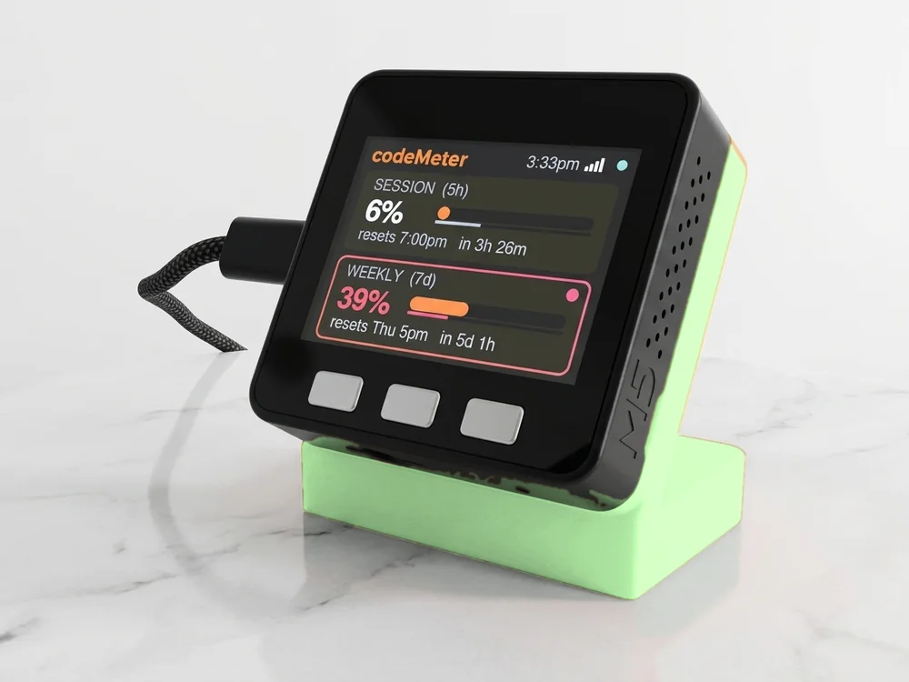

Industrials · Nasdaq
Copart (CPRT) on your desk.
The live CPRT price and a candlestick chart on a small Wi-Fi display. Type Stock:CPRT during setup.

Set it up
Type Stock:CPRT.
That is all priceMeter needs to show Copart. No account, no app and no API key.
Stock:CPRTGive it a short name, up to 8 letters, like Copart. Upper or lower case both work. The device sends CPRT to Yahoo Finance as typed.
- 1Plug it in
Join the SETUP PRICE TICKER Wi-Fi from your phone. The setup page opens.
- 2Type the ticker
Pick your home Wi-Fi, then type Stock:CPRT in a ticker field and Copart as its name.
- 3Watch it go
It joins your Wi-Fi and draws the chart. Press the left button for your next ticker.
On the screen
What CPRT looks like.
The price, 24 candles and the move across them. These are the numbers from the chart above.
- Price on screen
- 31.93000 (Nov 2, 2026 close)
- Across the chart
- +17.0% over 24 daily candles, Sep 30, 2026 to Nov 2, 2026
- Chart high / low
- 32.02000 / 25.72000
- 52-week range
- 25.72000 to 43.38000
- Trades on
- Nasdaq
Recorded from Yahoo Finance at the Nov 2, 2026 close. On the device the price refreshes every 15 seconds while the market is open, and the price turns red when it drops below the current candle's open.
About
Copart, on your desk.
Copart is an S&P 500 company in Industrials (Diversified Support Services), headquartered in Dallas, Texas, founded in 1982. priceMeter shows it next to up to 24 other stocks, ETFs or crypto pairs, in any mix.
Candle sizes
From 1 minute to 1 month.
Press the right button, then left or right, to change how much CPRT history the 24 candles cover. It remembers your pick.
- 1m
- 3m
- 5m
- 15m
- 1h
- 4h
- 1d
- 1w
- 1M
The chart above uses 1d: 24 trading days, about five weeks. 1w covers about six months, 1M two years.
FAQ
Questions.
Can I see Copart price on a desk display?
Yes. priceMeter shows CPRT live on a small Wi-Fi screen: the price, a 24-candle chart and the move across it. Type Stock:CPRT during setup.
Does it work when the market is closed?
Yes. CPRT trades on Nasdaq during US market hours. Outside them the screen keeps the last price and chart until trading opens again. Crypto on the same device keeps moving around the clock.
How fast does CPRT update?
The price refreshes every 15 seconds from Yahoo Finance while the market is open, and the whole chart every 30 seconds. No API key or brokerage account is needed.
Can I show CPRT with other tickers?
Yes, up to 25 in any mix of stocks, ETFs and crypto. Press the left button for the next one, or left and right together to cycle every 15 seconds.